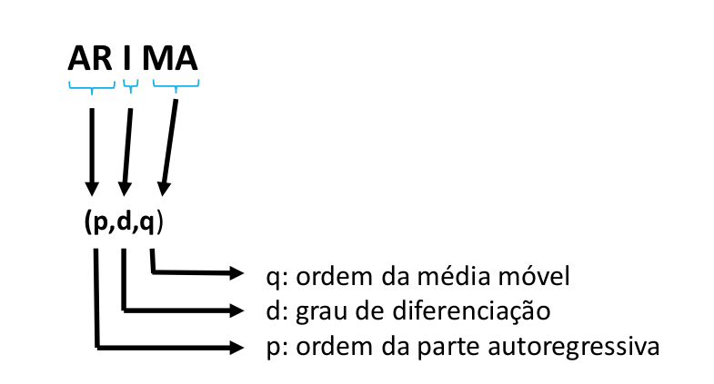
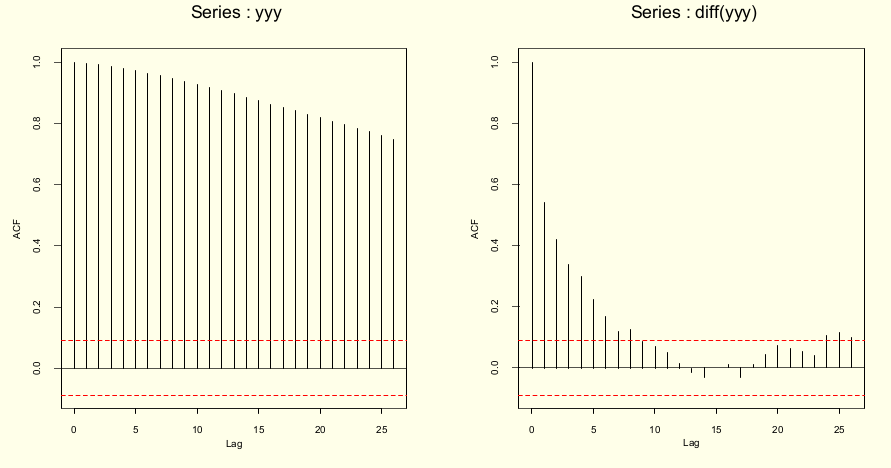

5 Modelagem em Séries Temporais
5.1 O que são os Modelos Box & Jenkins
A abordagem de Box-Jenkins para a modelagem dos processos ARIMA foi descrita num livro publicado por George Box e Gwilym Jenkins em 1970.
BOX, G.E.P. and G.M. JENKINS (1970)
Time series analysis: Forecasting and control, San Francisco: Holden-Day.o método criado por Box & Jenkins envolve a identificação de um processo ARIMA (Modelos autorregressivos, integrados e de médias móveis) adequado, ajustando-o aos dados e, uma vez ajustados permite também utilizar esses modelos para a descrição e/ou previsão (forecast).
Uma das características atraentes da abordagem Box-Jenkins é que os processos ARIMA são uma classe muito rica de modelos e geralmente é possível encontrar um modelo que forneça uma descrição adequada dos dados. Ajustam simultaneamente tendência, sazonalidade, ciclicidade e estrutura de dependência serial.
A dependência serial é a influência que um dado evento no tempo recebe de pontos anteriores.
O processo de modelagem B&J é feito em um ciclo iterativo de 3 estágios (repetido até o ajuste do modelo mais adequado):
Identificação - análise exploratória, baseada em gráficos dos dados brutos, autocorrelação, autocorrelação parcial, buscando identificar o tipo de modelo + adequado;
Estimação - estimativa de termos e parâmetros e seleção do “melhor modelo”;
Diagnóstico - critérios de ajuste, parcimônia.
5.2 Alguns processos estocásticos
- Processo aleatório (ruido branco): sequência de variáveis aleatórias (\(a_t\)) que são mutuamente independentes e identicamente distribuídas. Possui média e variância constantes e os coeficientes de autocorrelação são iguais a:
\[ \rho_{h} = \left\{ \begin{array}{rc} 1, &\mbox{se} \quad h = 0, \\ 0 , &\mbox{se} \quad h = \pm 1, \pm 2, ... \end{array}\right.\]
Passeio aleatório (random walk): Denomina-se passeio aleatório quando a variável aleatória \(Z_t\) é igual à \(Z_{t-1}\) mais um erro aleatório \(\rightarrow\) \(Z_t = Z_{t-1} + a_t\).
- Quando \(t = 0 \rightarrow Z_1 = a_1\), logo \[Z_t = \sum_{t}^{i=1} a_i\]
5.3 Modelo ARIMA
Na análise de séries temporais, um Modelo Autorregressivo Integrado de Médias Móveis (Autoregressive Integrated Moving Average ou ARIMA, na sigla em inglês) é uma generalização de um Modelo Autorregressivo de Médias Móveis (ARMA). Ambos os modelos são ajustados aos dados da série temporal para entender melhor os dados ou para prever pontos futuros na série. Modelos ARIMA são aplicados em alguns casos em que os dados mostram evidências de não estacionariedade, em que um passo inicial de diferenciação (correspondente à parte “integrada” do modelo) pode ser aplicado uma ou mais vezes para eliminar a não estacionariedade.
Temos então:
AR (Autorregressivo): avalia a relação entre os períodos (lags) através da autocorrelação, ou seja, indica que a variável de interesse é “regressada” em seus próprios valores defasados, isto é, anteriores. O objetivo de desse modelo e extrair essa influência.
I (Integrated): Aplica a diferenciação, se necessária, ou seja, indica que os valores de dados foram substituídos com a diferença entre seus valores. E os valores anteriores e este processo diferenciador pode ter sido realizado mais de uma vez.
MA (Moving Average): Indica que o erro de regressão é na verdade uma combinação linear dos termos de erro, cujos valores ocorreram contemporaneamente e em vários momentos no passado, ou seja, avalia os erros entre períodos e extrai estes erros (não tem relação com MA usados para suavização da ST).

p é a ordem (número de defasagens) do modelo autorregressivo;
d é o grau de diferenciação (o número de vezes em que os dados tiveram valores passados subtraídos);
q é a ordem do modelo de média móvel.
Exemplos:
| Parâmetro | Descrição |
|---|---|
| \(p = 1\) | Significa que uma determinada observação pode ser explicada pela observação prévia + erro |
| \(p = 2\) | Significa que uma determinada observação pode ser explicada por duas observações prévias + erro |
| \(d = 0\) | Significa que não é aplicada a diferenciação |
| \(d = 1\) | Significa que será aplicada diferenciação de primeira ordem |
| \(d = 2\) | Significa que será aplicada diferenciação de segunda ordem |
| \(q = 1\) | Significa que uma determinada observação pode ser explicada pelo erro da observação prévia |
| \(q = 2\) | Significa que uma determinada observação pode ser explicada pelo erro de duas observações prévias |
| ARIMA | Descrição |
|---|---|
| AR(1) ou ARIMA(1,0,0) | Apenas elemento autorregressivo , de \(1^{a}\) ordem |
| AR(2) ou ARIMA(2,0,0) | Apenas elemento autorregressivo , de \(2^{a}\) ordem |
| MA(1) ou ARIMA(0,0,1) | Apenas Média Móvel |
| ARMA(1,1) | Autorregressão e média móvel de \(1^{a}\) ordem |
5.3.1 Modelo Autorregressivo de ordem p - AR(p) ou ARIMA(p,0,0)
Supondo que a variável aleatória \(Z_t\) é linearmente correlacionada com seus próprios valores defasados, este é um modelo autorregressivo geral de ordem p.
\[Z_t = c + \phi_1 Z_{t-1} + \phi_2 Z_{t-2} + ... + \phi_p Z_{t-p} + a_t\] , sendo \(t=1,2,...,p\)
O objetivo é estimar:
a constante c - média do processo ou intercepto
a ordem p do modelo - até onde vai a dependência
os parâmetros \(\phi\) de cada termo - peso de cada ponto passado na determinação do ponto t
Para estimar os parâmetros \(\phi\) de um AR, a estacionariedade de \(1^a\) e \(2^a\) ordens são fundamentais !!!
| Processo | Modelo |
|---|---|
| AR(1) | \[Z_t = c + \phi_1 Z_{t-1} + a_t\] |
| AR(2) | \[Z_t = c + \phi_1 Z_{t-1} + \phi_2 Z_{t-2} + a_t\] |
| \(\dots\) | \(\dots\) |
| AR(p) | \[Z_t = c + \phi_1 Z_{t-1} + \phi_2 Z_{t-2} + ... + \phi_p Z_{t-p} + a_t\] |
5.3.2 Condições de estacionariedade
Uma série é estacionária quando suas propriedades não variam ao longo do tempo. Em um processo AR, a estacionariedade se reflete na estimação dos parâmetros:
No caso AR(1) basta que \(|\phi_1| < 1\) para que o processo seja estacionário.
No caso AR(2):
\(|\phi_2|< 1\)
\(\phi_2 + \phi_1 < 1\)
\(\phi_2 - \phi_1 < 1\)
5.3.3 Modelo de Médias Móveis de ordem q - MA(q) ou ARIMA(0,0,q)
Independente do processo autorregressivo, cada elemento da série pode também ser afetado pelo erro passado - processo “Médias Móveis”. Neste caso, o valor de \(Z_t\) depende de valores do componente aleatório em pontos anteriores (usa-se a denominação choque aleatório).
\[Z_t = C + a_t - \theta_1 a_{t-1} - \theta_2 a_{t-2} - ... - \theta_p a_{t-q}\]
Por convenção os termos em a são escritos com sinais negativos
Cada observação é a soma de um componente aleatório \(a_t\) e uma combinação dos componentes aleatórios anteriores.
O modelo pode ser escrito baseado nas defasagens (informações passadas) do ruído branco
| Processo | Modelo |
|---|---|
| MA(1) | \[Z_t = c + a_t - \theta_1 a_{t-1}\] |
| MA(2) | \[Z_t = c + a_t - \theta_1 a_{t-1} - \theta_2 a_{t-2}\] |
| \(\dots\) | \(\dots\) |
| MA(q) | \[Z_t = c + a_t - \theta_1 a_{t-1} - \theta_2 a_{t-2} - ... - \theta_p a_{t-q} + a_t\] |
5.3.4 Condições de invertibilidade
No modelo MA não há restrição sobre os \(\theta\)’s para que o processo seja estacionário, mas é necessário garantir a invertibilidade.
Existe uma dualidade entre processos médias móveis e autorregressivo, onde a equação de MA pode ser reescrita na forma AR (de ordem infinita). Se isso for possível, podemos dizer que o processo é invertível, ou seja, se puder utilizar um AR(p) para explicar um MA(q).
Mas, para isso algumas condições devem ser satisfeitas:
No caso MA(1) basta que \(|\theta| < 1\) para que o processo é invertível.
No caso MA(2):
\(|\theta_2|< 1\)
\(\theta_2 + \theta_1 < 1\)
\(\theta_2 - \theta_1 < 1\)
5.3.5 Modelo Autorregressivo de Médias Móveis de ordem p e q - ARMA(p,q) ou ARIMA(p,0,q)
A importância de um modelo ARMA está no fato de poder descrever uma série estacionária por um modelo que envolve menos parâmetros que um MA puro ou um AR puro.
\[Z_t = c + \phi_1 Z_{t-1} + \phi_2 Z_{t-2} + ... + \phi_p Z_{t-p} + a_t - \theta_1 a_{t-1} - \theta_2 a_{t-2} - ... - \theta_p a_{t-q}\]
Cada observação é definida por combinação linear de observações anteriores e combinação de componentes aleatórios anteriores.
Neste modelo misto, as duas condições - estacionariedade e invertibilidade - são necessárias
| Processo | Modelo |
|---|---|
| ARMA(1,1) | \[Z_t = c + \phi_1 Z_{t-1} + a_t - \theta_1 a_{t-1}\] |
| ARMA(2,2) | \[Z_t = c + \phi_1 Z_{t-1} + \phi_2 Z_{t-2} + a_t - \theta_1 a_{t-1} - \theta_2 a_{t-2}\] |
| \(\dots\) | \(\dots\) |
| ARMA(p,q) | \[Z_t = c + \phi_1 Z_{t-1} + \phi_2 Z_{t-2} + ... + \phi_p Z_{t-p} + a_t - \theta_1 a_{t-1} - \theta_2 a_{t-2} - ... - \theta_p a_{t-q}\] |
- No caso ARMA(1,1), o processo será estacionário se \(|\phi_1| < 1\) e \(|\theta_1| < 1\), respectivamente.
5.3.6 Modelo Autorregressivo Integrado de Médias Móveis de ordem p, d e q - ARIMA(p,d,q)
Neste modelo se utiliza o método de diferenças para obter a estacionariedade da série. Também chamado de operador de deslocamento (backshift)
\[W_t = \bigtriangledown Z_t = (1-B)Z_t = Z_t - Z_{t-1}\]
O modelo então passa a ser:
\[W_t = \phi_1 W_{t-1} + ... + \phi_p W_{t-p} + a_t - \theta_1 a_{t-1} - ... - \theta_q a_{t-q}\]
\[\phi(B)W_t = \theta(B)a_t\]
\[\phi(B)(1-B)^d Z_t = \theta(B)a_t\]
Assim, se a série for estacionária, podemos representá-la por um modelo ARMA(p,q).
A figura abaixo mostra a série não estacionária antes e após diferenciação - \(d(1)\)

A figura abaixo mostra a ACF antes e após a diferenciação:

5.3.7 Resumo - Modelos ARIMA não sazonais
Resumindo, os modelos ARIMA não sazonais são geralmente denotados como ARIMA(p,d,q), em que os parâmetros p,d,q são números inteiros não negativos.
Robusto: Pode ser usado em praticamente qualquer tipo de ST
Dados estáveis, com poucos outliers
Requer dados estacionários: pode ser transformada usando diferenciação: remove tendências
Subtrai a observação do período atual do período anterior
A diferenciação pode ser feita 1x: diferenciação de primeira ordem
Ou pode ser necessário uma segunda vez: diferenciação de segunda ordem (mais raro)